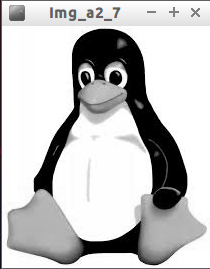

Avec Processing, il est aussi possible de travailler directement sur les pixels.
Avant de rentrer dans le vif du sujet, vous devez savoir qu'il existe un "type" dans Processing dont nous n'avons pas encore parlé : "color".
Une variable de type "color" correspond à une couleur. À cette variable de type "color" on associe donc 3 valeurs : le canal rouge, le canal vert et le canal bleu.
À faire vous-même 2.1
Saisissez et testez ce programme :
color maCouleur;
maCouleur=color(242,126,98);
fill(maCouleur);
ellipse(50,50,20,20);
println("Rouge :"+red(maCouleur));
println("Vert :"+green(maCouleur));
println("Bleu :"+blue(maCouleur));
Rien de très complexe dans le programme ci-dessus :
- on définit notre variable "maCouleur" : "color maCouleur;"
- on attribue une couleur à la variable maCouleur à l'aide de la fonction "color" : "maCouleur=color(242,126,98);"
- les fonctions "red", "green", "blue" retournent respectivement les valeurs liées aux canaux rouge, vert et bleu. Ces fonctions prennent en paramètre une variable de type "color" et retournent un "float".
Revenons maintenant à nos pixels.
Processing rend accessible un tableau qui contient, pour chaque pixel, les informations pour le canal rouge, pour le canal vert et pour le canal bleu. Chaque élément du tableau correspond à un pixel et est de type "color".
Si vous avez une image de 100 par 100, vous obtiendrez un tableau qui comportera 100*100=10000 éléments.
Raisonnons sur une image de 4 par 4 :

Chaque carré représente 1 pixel.
Processing nous fournira le tableau suivant : {p0,p1,p2,p3,p4,p5,p6,p7,p8,p9,p10,p11,p12,p13,p14,p15}. p0,p1... étant de type "color"
Ce tableau a pour noms "img.pixels" (si l'image s'appelle "img").
Pour récupérer les informations concernant le pixel de coordonnées (2,3) (sachant que le pixel "p0" a pour coordonnées (0,0)), il faudra écrire "img.pixels [14]"
À faire vous-même 2.2
Déterminez l'indice de position i dans le tableau "img.pixels" d'un pixel ayant pour coordonnées (x,y) si l'image a pour largeur L (je rappelle que l'indice de position d'un tableau commence à 0).
Il est possible de modifier la valeur d'un pixel à condition d'utiliser la fonction "updatePixels" après la modification et avant d'afficher l'image.
À faire vous-même 2.3
Créer un programme qui permettra de colorier en noir le pixel situé au centre de l'image "tux.jpg" (on rappelle que l'image "tux.jpg" a pour dimensions (208x242))
À faire vous-même 2.4
Saisissez et testez ce programme :
PImage img;
size (500,300);
img=loadImage("tux.jpg");
loadPixels();
for (int i=0; i<208*242; i=i+1){
int ro,ve,bl;
ro=int(red(img.pixels[i]));
ve=int(green(img.pixels[i]));
bl=int(blue(img.pixels[i]));
println("rouge : "+ro+" ; vert : "+ve+" ; bleu : "+bl);
}
À faire vous-même 2.5
Créez un programme qui remplacera tous les pixels blancs de l'image "tux.jpg" par des pixels rouges.

À faire vous-même 2.6
Faites des recherches pour trouver une méthode qui permet de transformer une image couleur en une image en niveau de gris (souvent improprement appelée "noir et blanc", car une image "noir et blanc" est uniquement composée de pixel noir et de pixel blanc)
Attention, cette recherche doit exclure toutes les méthodes s'appuyant sur des logiciels tiers types Gimp,...
À faire vous-même 2.7
À partir des recherches que vous venez de mener, écrire un programme avec Processing qui permettra de transformer l'image "tux.jpg" en une image en niveau de gris. Il est évidemment interdit d'utiliser le filtre proposé par Processing.
À faire vous-même 2.8
Essayez d'écrire un programme qui permettra d'obtenir ceci :

La méthode "get" de la classe Image permet de sélectionner une partie d'une image. Cette méthode prend 3 paramètres : img.get(x,y,L,H)

avec H la hauteur de la nouvelle image et L la largeur de la nouvelle image.
À faire vous-même 2.9
Saisissez et testez ce programme :
PImage img;
PImage img1;
size(208,242);
background(0);
img=loadImage("tux.jpg");
img1=img.get(65,3,80,90);
image(img1,70,80);
À faire vous-même 2.10
Créez un programme permettant d'obtenir ceci (déplacer le curseur de la souris dans la fenêtre ci-dessous) :